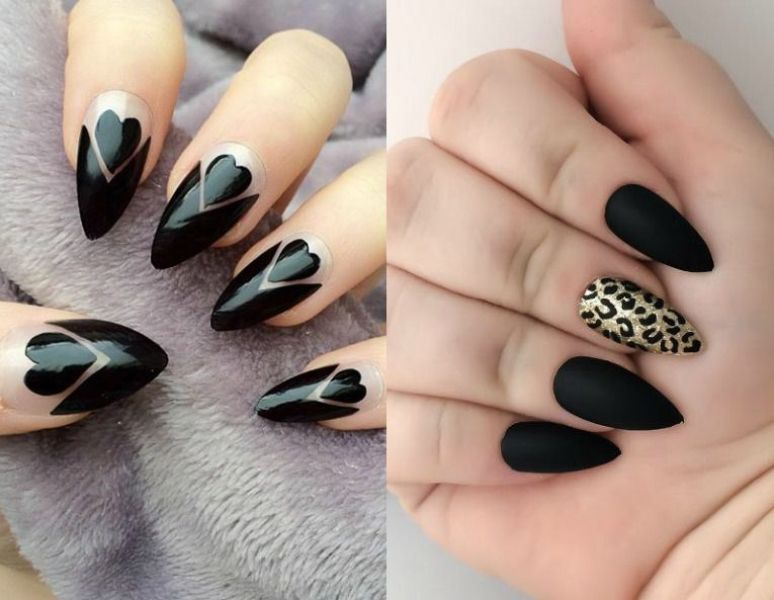
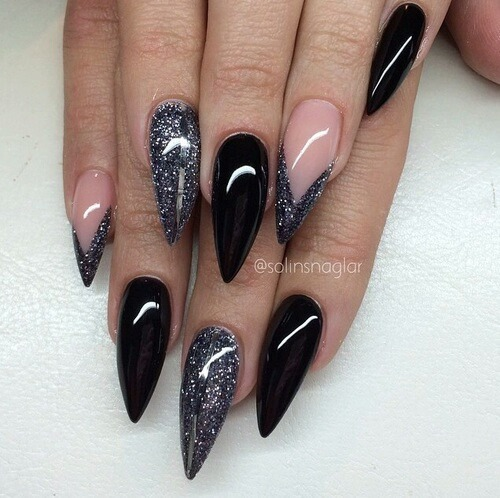
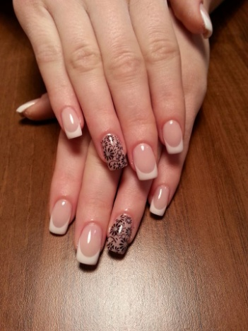
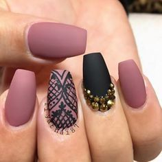
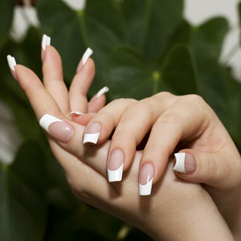
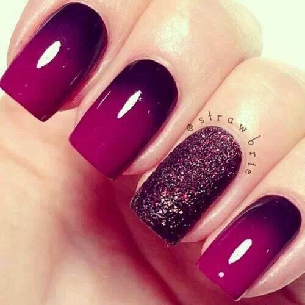

Unghii cu gel: avantaje si dezavantaje
Daca vrei o manichiura impecabila si de durata, dar ai unghii fragile, predispuse la rupere sau plesnire, o idee buna ar fi sa incerci unghiile cu gel. Iata ce ar trebui sa stii inainte sa faci o vizita la un salon de manichiura.

Unghiile cu gel sunt un tip de unghie artificiala care seamana cel mai bine cu unghia naturala. Acestea sunt asemanatoare cu unghiile din acril, ambele fiind realizate din lichid monomer si polimer pudra. Combinate, cele doua substante formeaza un fel de rasina tare, care are aceeasi consistenta ca cea a unghiei. Principala diferenta dintre unghiile cu gel si cele din acril este ca primele contin oligomer, un polimer care face unghiile mai flexibile.
Unghiile cu gel se realizeaza prin doua tehnici: cu lumina UV sau cu un activator de gel. In primul caz, gelul este intarit prin asezarea unghiei sub un aparat cu lumina UV timp de aproximativ 2 minute. Cea de-a doua tehnica presupune aplicarea unui activator de gel special, fie cu o pensula, fie prin sprayere.
Unghiile cu gel sunt foarte asemanatoare cu unghiile din acril in ceea ce priveste decorarea. Pe ambele poti aplica modele, piercing-uri, chiar si decoratiuni tridimensionale. De asemenea, pe ambele le poti purta lungi sau scurte, patrate, rotunde sau in forma de perla. Exista insa avantaje in alegerea unghiilor cu gel in defavoarea celor din acril. Cel mai important ar fi ca cele cu gel arata identic cu unghiile naturale. Sunt subtiri si flexibile si au un aspect lucios. In plus, amestecul folosit pentru a realiza gelul este inodor, ceea ce inseamna ca si femeile gravide pot purta unghii cu gel. Dezavantajele unghiilor cu gel includ pretul lor ridicat, dar si faptul ca se rup mai usor decat alte variante de unghii artificiale. De asemenea, spre diferenta de unghiile din acril, pe cele cu gel oja nu dureaza la fel de mult, asa ca trebuie sa le lacuiesti mai des. In plus, atunci cand se rup, tind sa se sfarame, ceea ce inseamna ca nu le poti repara singura si trebuie sa mergi la un salon pentru a indeparta gelul si a-l inlocui. Tot la capitolul dezavantaje, inainte de aplicarea gelului, unghia naturala trebuie pilita, ceea ce, in timp, se dovedeste destul de daunator. Daca ai decis sa apelezi la acest procedeu de infrumusetare, nu uita sa aplici ulei de cuticule pe unghii in fiecare seara si sa mergi la salon regulat (la 2-3 saptamani), pentru intretinerea unghiilor.
  